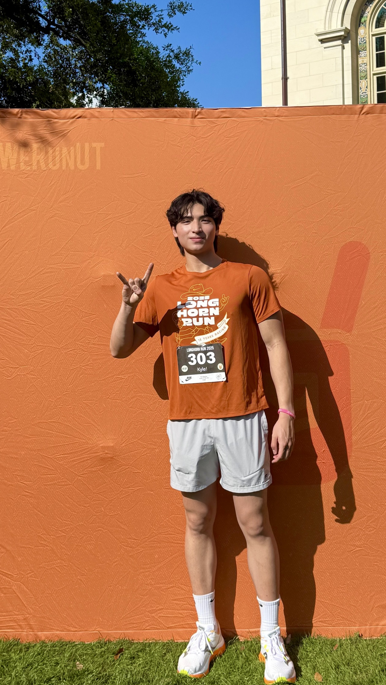

About Me

I grew up in the NASA–Houston area and spent much of high school in music, primarily saxophone, performing and competing in TMEA jazz and concert ensembles.
I began college at the University of Houston, earned my EMT license, and worked in clinical settings before transferring to the University of Texas at Austin to study Human Biology.
Outside of school, I’m competitive by nature. I reached Grandmaster in Overwatch at age 14 and Immortal in Valorant at age 16. I also enjoy skiing, trying new restaurants, and exploring new places.